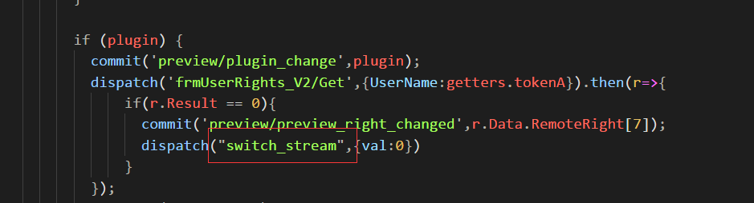
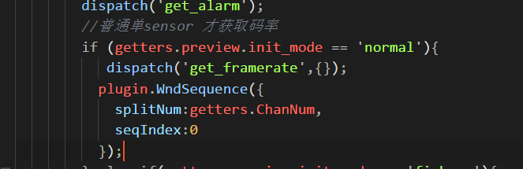

3.2 流程分析
3.2.1 Vue中预览插件调用

switch_stream({commit,state,getters,dispatch},{val}) {//预览切换码流
let Activex;
if (!getters.preview_right) return;
if (Activex = getters.preview_plugin) {
if (getters.plugin_type == 'flash') {
msg([getters.ip,getters.rtmp_port])
let rtmp_url = ['rtmp://', getters.ip, ':', getters.rtmp_port, '/live'].join('');
if(getters.factory_info.IsOfFishEye == 'y'){
let chList = rangeArray(1,getters.ChanNum);
chList = chList.map(item=>{
return {
ch:item,
stream_type:0
}
})
Activex.OpenDeviceAll(rtmp_url,JSON.stringify(chList));
}
else{
if (val == "0") {
// Activex.StopStream(1, rtmp_url, 'ch01_sub.264');
Activex.PlayStream(1, rtmp_url, 'ch01.264');
}
else if (val == "1") {
//Activex.StopStream(0, rtmp_url, 'ch01.264');
Activex.PlayStream(1, rtmp_url, 'ch01_sub.264');
}else if(val == "3"){//三码流
Activex.PlayStream(1, rtmp_url, 'ch01_third.264');
}
//Activex.PlaySmart(is_play_rule,is_play_result);
}
}
else {
dispatch('preview_plugin_callbackmsg',{});
if (getters.preview.init_mode == 'fisheye') {
let chList = rangeArray(1,getters.ChanNum);
Activex.OpenAllStream({
"streamType": val,
"transProto": 1,
"chList": chList,
"ip": getters.ip,
"port": getters.rtsp_port,
"usrname": getters.tokenA,
"pwd": getters.tokenB,
});
}
else if (getters.preview.init_mode == 'normal') {
Activex.StopStream({"ch": 1});
msg(["playstream",getters.ip,getters.rtsp_port,getters.tokenA,getters.tokenB,val])
Activex.PlayStream({
"streamType": val,
"transProto": 1,
"ch": 1,
"ip": getters.ip,
"port": getters.rtsp_port,
"usrname": getters.tokenA,
"pwd": getters.tokenB
});
}
var color = Activex.GetColor({ch:1});
//开流之后
setTimeout(_=>{
commit('preview/plugin_color_changed',color)
},250);
Activex.EnableSmartDisplay({"type":0,"param":0x1});
Activex.EnableSmartDisplay({"type":0,"param":0x2});
}
}
},

3.2.2 插件中的API
// 流的关闭
long NPAntsTestAPI::CloseStream(FB::JSObjectPtr obj,FB::CatchAll& args);
{
...
//@auto-param dev ch
prev->CloseStream(ch,dev);
...
}
// 流的播放
// 窗口的划分
registerMethod("WndSequence",
make_method(this, &NPAntsTestAPI::WndSequence));
long NPAntsTestAPI::WndSequence(FB::JSObjectPtr obj)
{
...
prev->WndSequence(splitNum, seqIndex, 1);
...
}
// 固定窗口
//@curSplitNum
//@seqIndex
//@mode
long PreviewObject::WndSequence(long curSplitNum,long seqIndex,long mode)
{
}
//